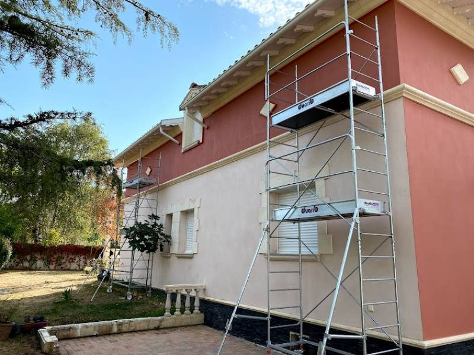

Artisan peintre · Cagnes-sur-Mer
La couleurjuste, poséeà la main.
Peinture intérieure, extérieure et ravalement de façade. Un seul artisan, du premier conseil à la dernière couche.

★★★★★
5,0 / 560 avis GooglePeinture intérieure, extérieure et ravalement de façade. Un seul artisan, du premier conseil à la dernière couche.

Rafraîchir un séjour, rénover une façade provençale ou protéger des murs des intempéries : le métier reste le même. Préparer, protéger, appliquer avec patience.
Tout ce qui touche à la peinture et à la façade, mené de bout en bout.
Murs, plafonds, boiseries et menuiseries. Une finition nette qui change une pièce, dans le respect de votre intérieur.
Façades, murets, balcons et clôtures, avec des produits taillés pour le soleil et les embruns de la Côte.
Nettoyage, traitement, reprise des fissures et mise en peinture. On rend son éclat à votre maison.
Enduits lissés, effets matière et reprises ciblées pour un rendu haut de gamme, dedans comme dehors.
Cinq étapes simples, pour un résultat dont vous serez fier.
On regarde ensemble le support, la teinte et le budget. Conseil honnête, sans jargon.
Un chiffrage clair et gratuit, détaillé poste par poste. Pas de surprise.
Protection des sols et meubles, ponçage, rebouchage, sous-couche. Le détail commence ici.
Peinture en couches régulières, produits adaptés. Chantier propre chaque soir.
Finitions vérifiées avec vous, chantier nettoyé. Vous validez le résultat.
Façades, intérieurs et rénovations autour de Cagnes-sur-Mer. Photos de chantiers réels.
Note de 5,0 / 5 sur 60 avis Google.
« Véritable expert en peinture intérieure et extérieure, il a réalisé une rénovation impeccable. Un professionnel de confiance. »
« Ponctuel, professionnel, il prend le temps d'écouter. Après plusieurs devis il a été le plus sérieux. »
« Travail propre et soigné, intérieur comme extérieur. Résultat impeccable, je recommande ! »
Devis gratuit et sans engagement. Réponse rapide, conseil honnête et travail soigné.